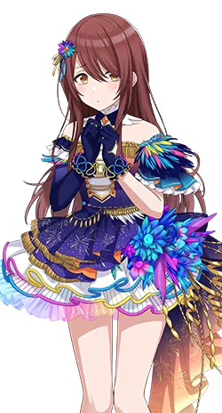
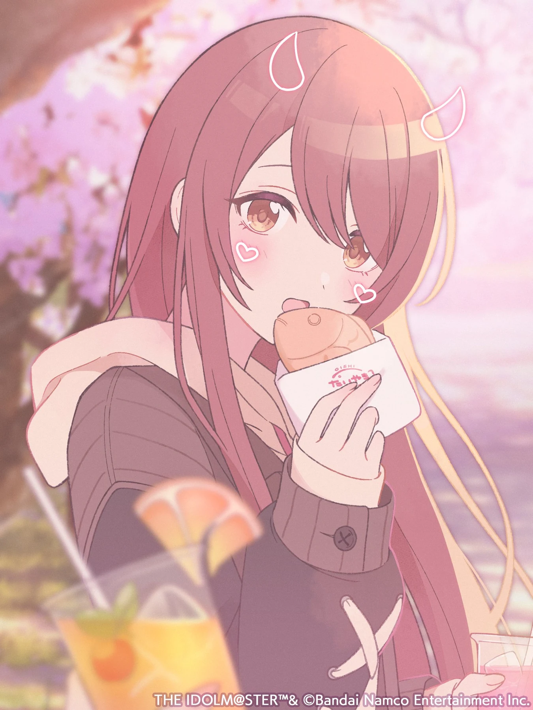
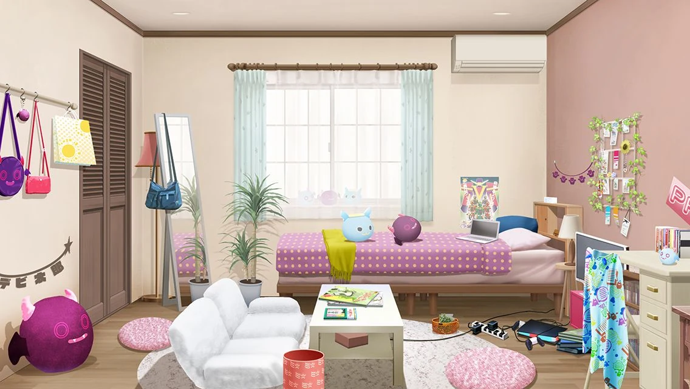

PERSONAL PAGE NFC PROFILE
A LITTLE INTRODUCTION
你好，我是
海未PCN · OSAKI TENKA PRODUCER
一张写给自己的数字名片。
这里放我的联系方式，和我喜欢的东西。
CN / 海未PFAN OF OSAKI TENKA
MY
FAVORITE ✳
FAVORITE ✳

OSAKI✳TENKA
MY SUPPORTOSAKI TENKA · ALSTROEMERIA
A FAN PAGE MADE BY 海未P
SCROLL TO EXPLORE01 / 04
01 — ABOUT MEA QUICK INTRODUCTION
喜欢的人和事，
都认真收藏。
我是 海未P，大崎甜花担当。
把常用入口和喜欢的东西，放在这一页。

MY♡
OSHI
A FAVORITE I WANTED TO SHARE ✳

A LITTLE PIECE OF MY WORLD02 — MY LINKSLET'S KEEP IN TOUCH
MY SOCIAL SPACES
找到我，
聊聊喜欢的事。
NFC · SAVE THIS PAGE
把卡片靠近手机，就能回到我的主页。
03 — FAVORITESA SONG I LOVE / TENKA SOLO
TENKA'S
SOLO SONG
✳ 2021LISTEN & TAKE IT SLOW
SOLO SONG
✳ 2021LISTEN & TAKE IT SLOW
ONE OF MY FAVORITES
また明日又是明天
大崎甜花（CV. 前川涼子）的个人角色曲。
我很喜欢的一首歌，接入网易云音乐播放。
A SMALL SONG FOR THE WALK HOME